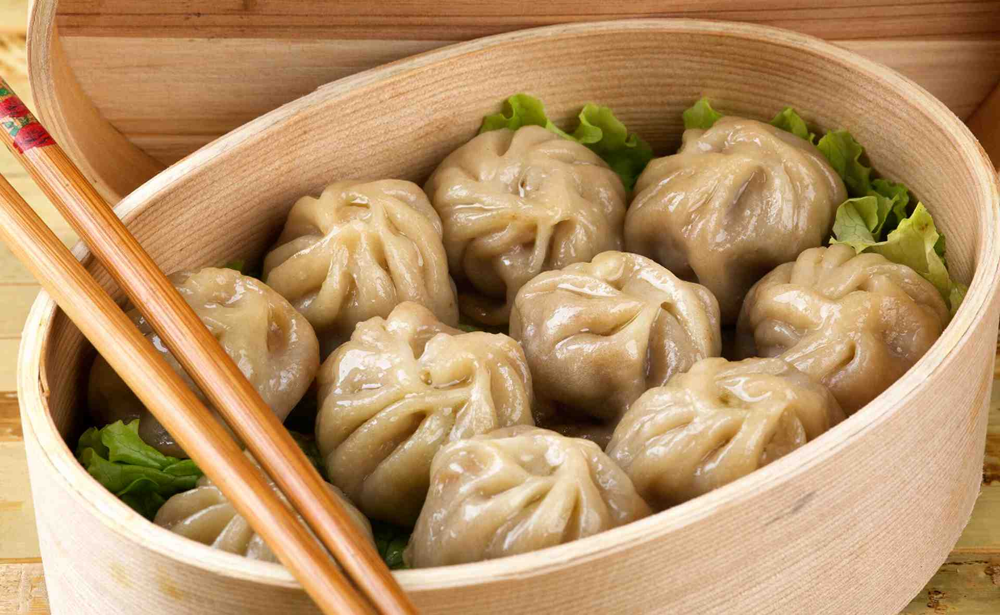

Здесь всё про пельмени
Баоцзы
Первые в нашем списке. Кстати, именно эти пельмешки очень любит Воин Дракона — герой популярного мультфильма «Кунг-фу панда». Как вы уже догадались, это блюдо китайской кухни.
Бёрики
Тесто для бёриков замешивают из муки высшего сорта, воды, яиц и добавляют соль. Пока оно настаивается, приступают к приготовлению начинки. Мясо при этом рубится ножом на мелкие кусочки, а не прокручивается через мясорубку. В фарш добавляют мелко порубленный шпик и репчатый лук, специи и зелень. Поэтому блюдо получается сочным и ароматным. Тесто раскатывают в круглые лепёшки и в середину каждой кладут фарш. Отваривают бёрики в кипящей солёной воде и подают с маслом.
Бораки
Бораки — блюдо армянской кухни на тонком тесте с начинкой из бараньего или говяжьего фарша. Его особенность состоит в том, что фарш предварительно обжаривают, а затем закладывают в трубочки из теста. Их запечатывают только снизу и помещают в кастрюлю вертикально. До готовности бораки не варят, а слегка припускают и обжаривают. Блюдо подаётся с зеленью, овощами или с подливкой на основе мацуна (армянского кисломолочного напитка), зелени и чеснока.
Вареники
Вареники — традиционное славянское блюдо, чаще всего встречающееся в украинской кухне. Тесто может быть разным. Вареники на кефире и яйцах получаются нежными и пышными. Чтобы сделать блюдо постным, тесто замешивают на воде и муке, солят и тонко раскатывают. В качестве начинки чаще всего используют рубленое мясо, картофель, капусту, грибы, творог или ягоды. При подаче на стол в тарелку с варениками часто кладётся сметана или сливочное масло.
Вонтоны
Вонтоны — разновидность пельменей в китайской кухне. Обычно их подают в супе, но иногда и жарят. В начинку кладут не только мясо свинины, но и грибы сянгу и даже стебли молодого бамбука. В фарш щедро добавляют имбирь, чеснок и перец, так что блюдо получается довольно пряным.Суп с вонтонами особенно популярен на Новый год, и считается, что лапша в нём символизирует долголетие.
Гёдза
Гёдза — это китайское блюдо, которое японцы настолько полюбили, что стали считать своим. Этот вид пельменей в Японии принято жарить.Гёдза — это китайское блюдо, которое японцы настолько полюбили, что стали считать своим. Этот вид пельменей в Японии принято жарить.
Гюрза
Гюрза — блюдо азербайджанской кухни. Его название обусловлено тем, что при лепке в пельмешке оставляют маленькую дырочку и при надкусывании издаётся звук, напоминающий шипение змеи.В качестве начинки обычно используют бараний или говяжий фарш. Мясо перемешивают с луком в равных пропорциях. Добавляют соль, перец и мацун или несладкий йогурт — начинка получается с кислинкой. Подают гюрзу с маслом, уксусом или сметаной.
Дамплинги
Дамплинги — это сингапурские родственники пельменей. Их готовят из тонкого теста с начинкой из мяса, овощей или морепродуктов.Существуют особые правила приготовления дамплингов, которые нельзя нарушать. Например, у них должно быть определённое количество защипов теста, которые делаются вручную бамбуковой палочкой. Готовят дамплинги в бамбуковых корзиночках на пару. Форма пельменей может быть самой разной: круглой, овальной… Встречаются даже пельмешки в форме корабликов, тюльпанов и рыбок. Готовое блюдо подают к столу вместе с соевым соусом и винным уксусом.
Димсам
Эти китайские пельмени ближе к десерту, чем к основному блюду. Димсам делают из тончайшего рисового теста, начиняют фруктами, овощами или морепродуктами и готовят на пару. Форма у этих пельменей может быть любой, всё зависит от фантазии повара. Димсам подаются к столу во время традиционного китайского чаепития. В переводе с китайского их название означает «сердечно тронуть» или «заказать для сердца».
Дюшбара
Дюшбара — одно из самых вкусных блюд азербайджанской кухни. Оно представляет собой пряный суп из пельменей.Из очень тонкого теста лепят пельмешки размером вдвое меньше обычных. Сначала их варят в солёной воде, а потом — в мясном или курином бульоне. Во время варки в дюшбара добавляют много специй, четвертинки лука и чеснока.
Кимчи-манду
Кимчи-манду — корейские пельмени из тонкого рисового теста с начинкой из говяжьего или свиного фарша с тофу, луком, имбирём и острой пекинской капустой. Иногда фарш заменяют грибами. По форме кимчи-манду очень похожи на обычные пельмени, только края у корейских собратьев загнуты вверх. Варится блюдо в подсоленной воде и чаще всего подаётся с соевым соусом.
Манты
Манты — особый вид пельменей из Средней Азии. Готовятся они на пару в специальной «мантышнице» — каскане. Манты крупнее пельменей и отличаются необычной формой. Начинка для них готовится из рубленого мяса баранины, конины или говядины. Также добавляют кусочки курдючного жира и репчатый лук. Зачастую манты начиняют сезонными овощами, например морковью или тыквой. Подают блюдо со сметаной и свежей зеленью.
Модак
Модак — оригинальное блюдо индийской кухни, напоминающее хинкали, но только по форме. Тесто для модака делают из рисовой муки, а в начинку кладут кокосовую стружку, пальмовый сахар, кардамон и орехи. Готовятся эти сладкие пельмени на пару или во фритюре. Подают модак вместе с топлёным маслом.
Пигоди
Пигоди — это корейские блюдо, которое готовится на пару. Пигоди берёт начало от другого национального корейского блюда ванманду, название которого означает «королевский пельмень». Именно от него и пошли эти большие паровые пирожки.Обычно пигоди готовят с мясом и капустой. Иногда пирожки разрезают вдоль посередине и начиняют салатом, например морковью по-корейски.

Позы
Позы, или буузы, — традиционное бурятское и монгольское блюдо. Позы немного похожи на манты, но в фарш для них добавляют молоко. Это придаёт блюду большую сочность. Рубленое мясо с луком заворачивают в тесто так, чтобы вверху оставалось отверстие. Варят позы на пару отверстием вверх, чтобы драгоценный бульон не выливался. Получаются довольно крупные открытые пельмени, которые обычно едят руками.
Сибирские пельмени
Пельмени — традиционное сибирское блюдо. Отправляясь в тайгу, сибиряк обязательно брал с собой запас твердокаменных сибирских пельменей, которые за несколько минут в кипящей воде превращались в прекрасный обед.Для сибирских пельменей замешивают крутое тесто, а пока оно настаивается, готовят начинку. Опытные хозяйки обычно используют фарш из нескольких видов мяса. Раньше в начинку закладывали тёртый лед, чтобы охладить фарш. Такой способ помогал сохранять мясо более сочным. Сейчас же просто добавляют соль и перец по вкусу.
Тортеллини
Тортеллини — блюдо итальянской кухни. Его готовят из пресного теста, а в начинку кладут мясо, сыр или овощи. Но можно встретить и тортеллини с начинкой из каштанов, грибов, ягод или традиционного молочного продукта рикотты. Уголки каждой маленькой пельмешки соединяют и защипывают, придавая ей вид колечка. Подают итальянские пельмени с различными соусами из грибов, сливок, белого вина и сыра.
Хинкали
Хинкали — национальное блюдо грузинской кухни с мясной начинкой. Фарш готовится заранее, чтобы тесто не сохло. Мясо для начинки приправляют специями, добавляют много лука и чеснока. Тесто замешивают из муки, соли и небольшого количества воды, так что оно получается довольно плотным и тугим. Традиционно грузинские хозяйки лепят хинкали таким образом, чтобы на верхушке получился небольшой хвостик из теста. Слепленные пельмени отваривают в солёной воде.Едят хинкали руками, держась за хвостик, который потом выбрасывают.
Цзяоцзы
Цзяоцзы — разновидность китайских пельменей. В тесто дрожжи не кладут, начинка — фарш из свинины плюс капуста. Другие виды начинок встречаются намного реже. Цзяоцзы могут иметь различную форму, но чаще всего их делают треугольными с продольным защипом сверху. Эти пельмени варят на пару и подают вместе с традиционным соусом из сои, измельчённого чеснока и уксуса.Само название в переводе означает «смена одного другим». Поэтому на рубеже старого и нового года, а также между осенью и зимой наступает время есть цзяоцзы.
Шао-май
Ещё один сорт китайских пельменей — шао-май. Они представляют собой узелки из теста, внутри которых спрятана сочная начинка. Обычно она состоит из измельчённой свинины, креветок, грибов шиитаке, зелёного лука и имбиря. Начинку заворачивают в тонкое пшеничное тесто и готовят на пару. При подаче блюдо приправляют китайским рисовым вином, соевым соусом, кунжутным маслом и украшают икрой краба.
ВдохновительКак готовить домашние пельмени.Если интересно заходи